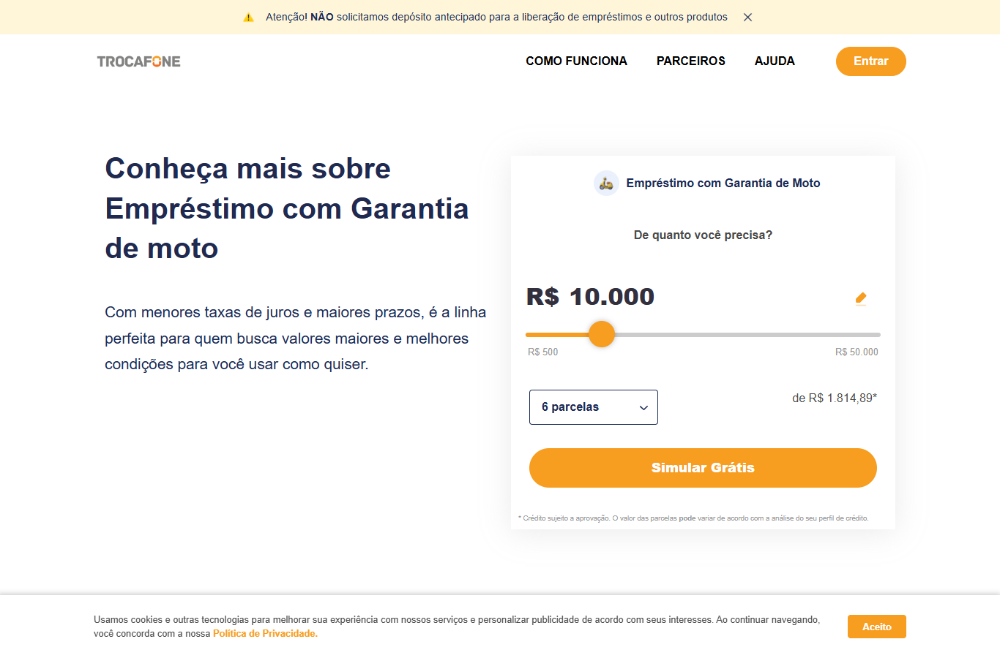
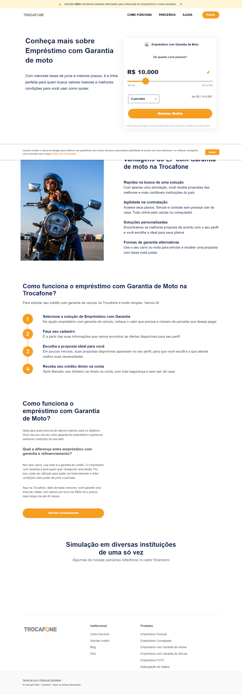

Sistema de Investigação de Marca e Identidade Online
https://credito.trocafone.com.br/emprestimo-com-garantia-moto
Prioridade: MEDIUM · Cenário: B_AMBIGUOUS_COMMUNICATION · Revisão humana: PENDING
Trata-se de plataforma comercial de captação e simulação de crédito (Empréstimo com Garantia de Moto) no subdomínio credito.trocafone.com.br (whitelabel EasyCrédito). Embora não haja tentativa de se passar por canal oficial do Banco BV, a página inclui o Banco BV no código da vitrine de parceiros (E-IMG-2) e capta simulações de crédito sem informar CNPJ, razão social ou condição de correspondente bancário no rodapé, demandando revisão humana de conformidade à luz da Resolução CMN nº 4.935/2021. [Revisor: CONFIRM] A hipótese do analista se sustenta. A página credito.trocafone.com.br/emprestimo-com-garantia-moto opera como plataforma comercial de captação de crédito (whitelabel EasyCrédito para a Trocafone) oferecendo simulador próprio de Empréstimo com Garantia de Moto (E-FOLD, E-SHOT-VIEWPORT, E-DISC-001) e listando o Banco BV entre as instituições financeiras parceiras no código da página (E-IMG-2, E-TXT-002), porém omitindo integralmente no rodapé e no corpo da página a razão social, o CNPJ, a declaração de correspondente bancário e os dados de ouvidoria exigidos pela Resolução CMN nº 4.935/2021 (E-FTR, E-SHOT-FULL). Confirma-se a classificação REVIEW_REQUIRED com prioridade MEDIUM.


| Ref | Tipo | Local | Conteúdo |
|---|---|---|---|
| E-URL | domain | url | URL final: https://credito.trocafone.com.br/emprestimo-com-garantia-moto (domínio: credito.trocafone.com.br) |
| E-DISC-001 | text | search_index | Índice de busca (grounding): trocafone.com.br — Oferece simulador próprio para empréstimo com garantia de veículo (carros e motos), refinanciamento, empréstimo com garantia de imóvel e crédito consignado (INSS, público e privado) |
| E-SHOT-VIEWPORT | screenshot | viewport | evidence\C9808fff724\attempt-1\viewport.png (sha256 57818804ea74eefa…) |
| E-SHOT-FULL | screenshot | page | evidence\C9808fff724\attempt-1\fullpage.png (sha256 572887cf8e86958a…) |
| E-TITLE | title | head | Encontre o empréstimo perfeito para você! | Trocafone |
| E-META-1 | meta | head | description: Faça a simulação online e encontre o empréstimo perfeito para você, seja ele empréstimo pessoal, consignado ou empréstimo com garantia, sem burocracia! |
| E-META-2 | meta | head | og:title: Encontre o empréstimo perfeito para você! | Trocafone |
| E-META-3 | meta | head | og:description: Faça a simulação online e encontre o empréstimo perfeito para você, seja ele empréstimo pessoal, consignado ou empréstimo com garantia, sem burocracia! |
| E-CANONICAL | meta | head | https://credito.trocafone.com.br/emprestimo-com-garantia-moto |
| E-HEAD-1 | heading | page | Conheça mais sobre Empréstimo com Garantia de moto |
| E-HEAD-2 | heading | page | Com menores taxas de juros e maiores prazos, é a linha perfeita para quem busca valores maiores e melhores condições para você usar como quiser. |
| E-HEAD-3 | heading | page | Vantagens do EP com Garantia de moto na Trocafone |
| E-HEAD-4 | heading | page | Como funciona o empréstimo com Garantia de Moto na Trocafone? |
| E-HEAD-5 | heading | page | Como funciona o empréstimo com Garantia de Moto? |
| E-HEAD-6 | heading | page | Qual a diferença entre empréstimo com garantia e refinanciamento? |
| E-HEAD-7 | heading | page | Simulação em diversas instituições de uma só vez |
| E-FOLD | text | viewport (acima da dobra) | Atenção! NÃO solicitamos depósito antecipado para a liberação de empréstimos e outros produtos COMO FUNCIONA PARCEIROS AJUDA Entrar Conheça mais sobre Empréstimo com Garantia de moto Com menores taxas de juros e maiores prazos, é a linha perfeita para quem busca valores maiores e melhores condições para você usar como quiser. Empréstimo com Garantia de Moto De quanto você precisa? R$ R$ 500 R$ 50.000 de R$ 1.814,89 * * Crédito sujeito a aprovação. O valor das parcelas pode variar de acordo com a análise do seu perfil de crédito. Vantagens do EP com Garantia de moto na Trocafone Usamos cookies e outras tecnologias para melhorar sua experiência com nossos serviços e personalizar publicidade de acordo com seus interesses. Ao continuar navegando, você concorda com a nossa Política de Privacidade. Aceito |
| E-FTR | text | footer | Termos de Uso e Política de Privacidade © Copyright 2026 - Trocafone - Todos os Direitos Reservados. |
| E-NAV | nav | header | <https://credito.trocafone.com.br/> | COMO FUNCIONA <https://credito.trocafone.com.br/emprestimo-com-garantia-moto#how-it-works> | PARCEIROS <https://credito.trocafone.com.br/emprestimo-com-garantia-moto#parceiros> | AJUDA <https://easyc.zendesk.com/> | Entrar <https://credito.trocafone.com.br/entrar> |
| E-CTA-1 | cta | page | Fechar alerta |
| E-CTA-2 | cta | nav | Entrar <https://credito.trocafone.com.br/entrar> |
| E-CTA-3 | cta | page | Simular Grátis |
| E-CTA-4 | cta | page | Simular Gratuitamente <https://credito.trocafone.com.br/emprestimo-com-garantia-moto#home> |
| E-CTA-5 | cta | page | Aceito |
| E-IMG-1 | image | nav (acima da dobra) | imagem alt='Logo' src=https://cdn2.easycredito.com.br/assets/whitelabels/trocafone/logo-9e9a7412d16676648ffc96428692cbf5b8a2d9063e96314d291ee90d6d341639.png (123x38, acima da dobra) |
| E-IMG-2 | image | page | imagem alt='Banco BV' src=https://cdn2.easycredito.com.br/assets/main/blank-ef1955ae757c8b966c83248350331bd3a30f658ced11f387f8ebf05ab3368629.gif (1x1, abaixo da dobra) |
| E-IMG-3 | image | page | imagem alt='Logo Trocafone' src=https://cdn2.easycredito.com.br/assets/whitelabels/trocafone/logo-9e9a7412d16676648ffc96428692cbf5b8a2d9063e96314d291ee90d6d341639.png (200x62, abaixo da dobra) |
| E-TXT-001 | text | page | PARCEIROS |
| E-TXT-002 | text | page | Algumas de nossas parceiras referência no setor financeiro |
| Dimensão | Sinal | Achado | Refs |
|---|---|---|---|
| VISUAL_IDENTITY | LEGITIMATE | A página utiliza identidade visual própria da marca Trocafone (cores laranja, branco e azul-escuro), sem imitar o layout ou paleta do Banco BV. | E-SHOT-VIEWPORT E-SHOT-FULL E-IMG-1 |
| DECLARED_COMMERCIAL_IDENTITY | CONFUSION | Embora exiba a marca comercial 'Trocafone' (operada via infraestrutura whitelabel da EasyCrédito), a página não informa razão social nem CNPJ em nenhuma seção, nem mesmo no rodapé. | E-FTR E-IMG-1 E-SHOT-FULL |
| CORRESPONDENT_TRANSPARENCY | CONFUSION | Não há aviso de atuação como correspondente bancário, tampouco informações sobre ouvidoria ou identificação formal da relação com as instituições financeiras parceiras. | E-FTR E-TXT-002 E-SHOT-FULL |
| INSTITUTIONAL_LANGUAGE | LEGITIMATE | A comunicação se apresenta como plataforma comparadora/intermediadora ('Simulação em diversas instituições de uma só vez'), sem reivindicar ser canal oficial do Banco BV. | E-HEAD-3 E-HEAD-7 E-TXT-002 |
| LOGO_USAGE | CONFUSION | Na seção 'Algumas de nossas parceiras referência no setor financeiro', há elemento de imagem com atributo alt='Banco BV' (E-IMG-2), cujo arquivo visual não carregou na captura por lazy-loading (placeholder 1x1). | E-IMG-2 E-TXT-002 E-SHOT-FULL |
| SERVICE_JOURNEY | CONFUSION | Disponibiliza simulador interativo de Empréstimo com Garantia de Moto ('De quanto você precisa? R$ 500 a R$ 50.000' / 'Simular Grátis') sem exibir as informações regulatórias obrigatórias de correspondente. | E-FOLD E-CTA-3 E-SHOT-VIEWPORT |
| CONTACT_CHANNELS | NEUTRAL | Apresenta apenas link de ajuda externo (easyc.zendesk.com), sem canais de atendimento telefônico ou ouvidoria visíveis. | E-NAV E-FTR |
| CONSUMER_CONFUSION | NEUTRAL | O usuário compreende estar no ambiente da Trocafone, mas não dispõe de transparência sobre o CNPJ do correspondente bancário responsável pela captação do crédito. | E-SHOT-VIEWPORT E-FTR |
Trata-se de plataforma comercial de captação e simulação de crédito (Empréstimo com Garantia de Moto) no subdomínio credito.trocafone.com.br (whitelabel EasyCrédito). Embora não haja tentativa de se passar por canal oficial do Banco BV, a página inclui o Banco BV no código da vitrine de parceiros (E-IMG-2) e capta simulações de crédito sem informar CNPJ, razão social ou condição de correspondente bancário no rodapé, demandando revisão humana de conformidade à luz da Resolução CMN nº 4.935/2021.
Nenhum CNPJ ou razão social identificáveis no conteúdo coletado.
| Tipo | Valor | Ref | Contexto |
|---|---|---|---|
| domain | trocafone.com.br | E-URL |
Mapeamento indicativo para apoio à auditoria. Não constitui conclusão regulatória; a decisão definitiva pertence à auditoria.
Fonte: NORMATIVE
Art. 14. O contrato de correspondente deve estabelecer: [...] II - vedação à utilização, pelo contratado, de logomarca ou de outros atributos que sejam similares aos adotados pela instituição contratante em suas agências, postos de atendimento, sítio eletrônico na internet, aplicativo ou outras plataformas de comunicação em rede;
Hipótese: Uso de logomarca ou de atributos similares aos adotados pela contratante em seus canais. A norma disciplina correspondentes contratados; o responsável não foi identificado como correspondente.
Evidência observada: E-IMG-2 E-SHOT-FULL E-TXT-002
Informação faltante:
Fonte: NORMATIVE
Art. 14. O contrato de correspondente deve estabelecer: [...] III - divulgação ao público, pelo contratado, de sua condição de prestador de serviços à instituição contratante, identificada pelo nome com que é conhecida no mercado, com descrição dos produtos e serviços oferecidos e canais de contato da instituição contratante, inclusive de sua ouvidoria, em local visível, em destaque e em formato legível, por meio de: a) sítio eletrônico do correspondente na internet, acessível na página inicial; b) aplicativo e outras plataformas de comunicação em rede do correspondente; [...]
Hipótese: Divulgação ao público da condição de prestador de serviços à contratante ausente, insuficiente ou sem destaque. A norma disciplina correspondentes contratados; o responsável não foi identificado como correspondente.
Evidência observada: E-FTR E-IMG-1 E-IMG-2 E-SHOT-FULL E-TXT-002
Informação faltante:
Fonte: NORMATIVE
Art. 3º O correspondente atua por conta e sob as diretrizes da instituição contratante, que assume inteira responsabilidade pelo atendimento prestado aos clientes e usuários por meio do contratado.
Hipótese: Atendimento ao público prestado por meio do contratado em condições que podem não seguir as diretrizes da contratante. A norma disciplina correspondentes contratados; o responsável não foi identificado como correspondente.
Evidência observada: E-CTA-3 E-FOLD E-SHOT-VIEWPORT
Informação faltante:
Se o responsável não for correspondente contratado, os indícios podem caracterizar uso indevido de marca ou fraude, fora do escopo da Res. 4.935: avaliar encaminhamento às áreas jurídica/segurança.
Limitações: requisitos contratuais/internos não fornecidos: mapeamento limitado ao texto normativo
Decisão: CONFIRM → REVIEW_REQUIRED / MEDIUM
A hipótese do analista se sustenta. A página credito.trocafone.com.br/emprestimo-com-garantia-moto opera como plataforma comercial de captação de crédito (whitelabel EasyCrédito para a Trocafone) oferecendo simulador próprio de Empréstimo com Garantia de Moto (E-FOLD, E-SHOT-VIEWPORT, E-DISC-001) e listando o Banco BV entre as instituições financeiras parceiras no código da página (E-IMG-2, E-TXT-002), porém omitindo integralmente no rodapé e no corpo da página a razão social, o CNPJ, a declaração de correspondente bancário e os dados de ouvidoria exigidos pela Resolução CMN nº 4.935/2021 (E-FTR, E-SHOT-FULL). Confirma-se a classificação REVIEW_REQUIRED com prioridade MEDIUM.
| Tema | Severidade | Questionamento | Refs |
|---|---|---|---|
| Visibilidade da marca na captura de tela | LOW | A referência ao Banco BV ocorre por meio de elemento de imagem na seção de parceiras (E-IMG-2 com alt='Banco BV'), cuja imagem permaneceu em estado de placeholder (1x1 blank.gif) por lazy-load na captura (E-SHOT-FULL). | E-IMG-2 E-TXT-002 E-SHOT-FULL |
| domain_attribution | MEDIUM | Responsável pela página não identificado; a conclusão sobre a marca não pode ser atribuída a um estabelecimento específico. | E-URL |
| Fonte | Consulta / hipótese | URL original | Título / trecho |
|---|---|---|---|
| grounding | Objetivo: Promotoras e correspondentes oferecendo refinanciamento, crédito com garantia, consignado e home equity.
Execute no Google Search as seguintes consultas (dorks):
- "Banco BV" ("crédito com garantia" OR "home equity" OR refinanciamento) (correspondente OR promotora) -site:bv.com.br -site:bancobv.com.br -site:bvfinanceira.com.br -site:bvinvestimentos.com.br -site:napista.com.br -site:bvopen.com.br -site:meufinanciamentosolar.com.br -site:votorantim.com.br -site:vam.com.br -site:reclameaqui.com.br -site:jusbrasil.com.br -site:jus.br -site:weebly.com -site:site123.me
- "Banco BV" (consignado OR "empréstimo") promotora ("correspondente bancário" OR correspondente) -site:bv.com.br -site:bancobv.com.br -site:bvfinanceira.com.br -site:bvinvestimentos.com.br -site:napista.com.br -site:bvopen.com.br -site:meufinanciamentosolar.com.br -site:votorantim.com.br -site:vam.com.br -site:reclameaqui.com.br -site:jusbrasil.com.br -site:jus.br -site:weebly.com -site:site123.me
Liste de forma abrangente as páginas públicas encontradas (até 12 resultados distintos), informando para cada uma o nome do estabelecimento/perfil, a URL e como a marca é utilizada (destaque visual, título, feirão, simulador, redes sociais e se há ou não identificação clara de CNPJ e condição de correspondente bancário). H2-product:refinanciamento e crédito com garantia | https://credito.trocafone.com.br/emprestimo-com-garantia-moto | trocafone.com.br Oferece simulador próprio para empréstimo com garantia de veículo (carros e motos), refinanciamento, empréstimo com garantia de imóvel e crédito consignado (INSS, público e privado) |
Original: https://credito.trocafone.com.br/emprestimo-com-garantia-moto
Final: https://credito.trocafone.com.br/emprestimo-com-garantia-moto
| Artefato | Caminho | SHA-256 | Bytes |
|---|---|---|---|
| screenshot_viewport | evidence\C9808fff724\attempt-1\viewport.png | 57818804ea74eefad34d065aa1d512506f70bbb56dbece1d6cc2f47e7aa5f6a2 | 85644 |
| screenshot_full | evidence\C9808fff724\attempt-1\fullpage.png | 572887cf8e86958adb87bc272bc571d1ce19c8119875a4f398f20997033c9b78 | 726508 |
| html | evidence\C9808fff724\attempt-1\page.html.txt | 76cc19fe5cf4e1cf554fa92bdaa901a68153130b37838658046c31a318bf2c14 | 48969 |
| text | evidence\C9808fff724\attempt-1\text.txt | 199f12b1bcad574ee95df0beafc452116c5f6d3d2bb99f1a87167a0e6248408e | 3325 |
| page_data | evidence\C9808fff724\attempt-1\page.json | 063e181a1b22b6867868c077da321826a3746c90bb2d3ccb858f8176c3f66fb3 | 18931 |
| Quando | De | Para | Nota |
|---|---|---|---|
| 2026-11-23T14:17:59+00:00 | DISCOVERED | QUEUED | prioritised (score 0.0) |
| 2026-11-23T15:05:08+00:00 | QUEUED | COLLECTING | |
| 2026-11-23T15:05:17+00:00 | COLLECTING | COLLECTED | |
| 2026-11-23T15:05:17+00:00 | COLLECTED | ANALYZING | |
| 2026-11-23T15:05:56+00:00 | ANALYZING | REVIEWING | |
| 2026-11-23T15:06:09+00:00 | REVIEWING | COMPLETED |